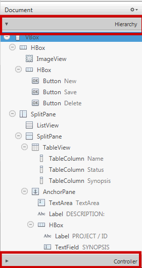
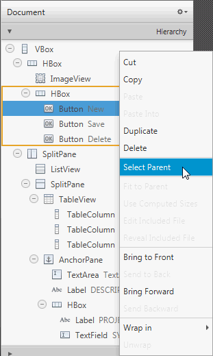
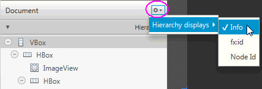
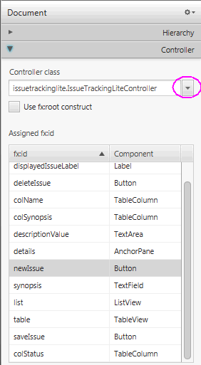

El panell Document, es troba en el costat inferior esquerre de la finestra del Scene Builder. Es compon de les seccions de Jerarquia i Controlador.

La secció Jerarquia mostra tots els elements de la GUI que componen el seu disseny FXML, inclosos els que no estan visibles en el panell Contingut. Pot usar-lo per a centrar-se en un element GUI específic, ja siga un node principal o un altre node. La ruta des de l’arrel del disseny FXML a un element GUI particular es mostra en la barra de Ruta i Selecció quan un element GUI està aïllat en el panell de Jerarquia. L’objecte GUI seleccionat es ressalta en el panell Hierarchy i en el panell Contingut.
També pot agregar un nou element GUI al seu disseny FXML arrossegant-lo des del panell Biblioteca a la ubicació desitjada en el panell Jerarquia. Això és especialment útil quan s’agrega un control emergent, com a informació sobre eines o ContextMenu. Per exemple, per a agregar una informació sobre eines a un element Button.
Pot reorganitzar la posició d’un element GUI en el seu disseny arrossegant-lo dins i fora dels contenidors dins del panell Jerarquia. Pot seleccionar diversos elements alhora en el panell Jerarquia i arrossegar-los i soltar-los en una sola ubicació.
El panell Jerarquia també és útil per a agregar un element gràfic a un element GUI que té la propietat gràfica, segons la seua API. Per exemple, pot agregar un element gràfic a un element Button, però no a un element GridPane.
Utilitze els següents passos per a agregar un element gràfic Cercle a un element Button utilitzant el panell Jerarquia:
Des del panell Biblioteca, arrossegament un element Cercle a la capa del Botó de destí en el panell Hierarchy.
Sense soltar el cursor del mouse, desplace el mouse sobre la capa Button per un segon i notarà que es crea una nova subcapa per al Cercle.
Solte el cursor del mouse i apareixerà el Cercle en el panell Contingut, amb el seu radi predeterminat de grandària 100.
En la secció Disseny del panell Inspector, reduïsca la grandària del radi del cercle a 6 perquè s’ajuste més adequadament en el Botó. Només pot tindre un element gràfic agregat a un element Button al mateix temps. Per a agregar un nou gràfic, primer ha d’eliminar l’existent. Si l’element és un contenidor, pot contindre qualsevol quantitat d’elements gràfics.
En fer clic amb el botó dret en un element en el panell Contingut o en una capa d’element específica en el panell hierarchy, es mostra un menú contextual de comandos que pot usar per a l’element seleccionat. Aquests comandos són un subconjunt dels comandos que estan disponibles en la barra de menú. Es pot clicar en el costat dret de la fila per a l’element GUI llistat en el panell Jerarquia per a activar l’editor de propietats en línia.

Quan es fa clic en la fletxa desplegable (es mostra en la següent imatge marcada amb un cercle) i selecciona Visualització de jerarquia, pot seleccionar Info, fx: id o Node id per a que es mostre al costat de cadascun dels elements enumerats en el panell de Hierarchy. La manera de visualització predeterminat és Info, que mostra qualsevol informació relacionada amb l’element, o el valor de la propietat de text si l’element té una propietat de text.

La secció Controlador permet administrar la classe de controlador que desitja usar amb el seu document FXML. La classe de controlador proporciona la lògica per a gestionar el comportament dels objectes en el seu disseny FXML. En el camp de text de la classe Controlador, configura el nom de classe Java ubicat en l’arxiu de classe controlador que desitja utilitzar. Aquest arxiu ha d’estar en la mateixa carpeta, una subcarpeta o una carpeta principal en la qual també es troba l’arxiu FXML.
Si l’arxiu de classe de controlador ja existeix en la mateixa carpeta que l’arxiu FXML amb el qual està treballant, pot seleccionar la classe de controlador de la llista desplegable fent clic en la fletxa.
La llista de tots els valors de fx:id utilitzats en el document FXML s’enumera en una taula. També s’inclou en la secció Controlador la casella de verificació fx: root constructor que crea una referència a un element arrel prèviament definit. Per a obtindre més informació sobre l’element <fx: root>, consulte el JavaFX API document.
